Perth
What did you do over the holiday, the one that changes date once a generation? I flew to Perth. Australians are so reverent about the Queen's birthday that few people at work knew why we were having a long weekend. ("It's the October holiday.") I've been bothering all the British tourists I meet that England owes the world interesting monarchs, like Charles I and Richard III, Henry and Elizabeth, even battleaxe Victoria and Edward VIII, a weak king who knew he shouldn't be king in wartime and had the courage to step down. I'm afraid Elizabeth II will be remembered only for her questionable child rearing skills. Charles seems like a cold fish... The Windsors are played out. Are there any Stewart pretenders left?
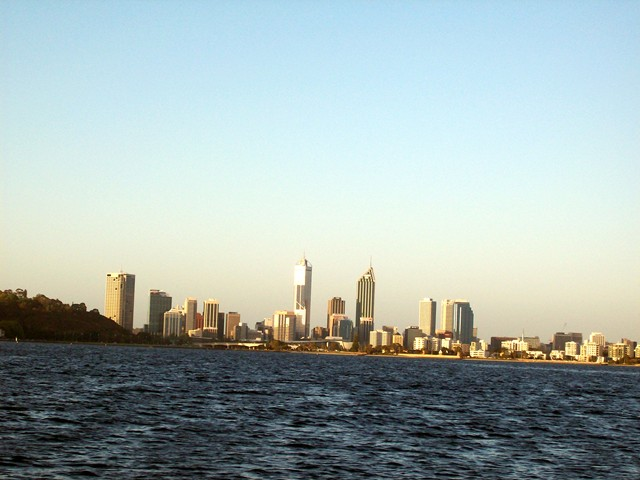
Lots of pics and stories still pending from Darwin/Kakadu. They're somewhere on a boat. The camera slipped out of my pocket in the wetlands research centre. The bloke agreed to mail it to me. Should have arrived in 5 days according to the Posties. My second weekly call went something like this:
Him: "Five days won't get it to Canada, mate."
Me: "YOU SENT IT TO CANADA?? [The whole office looked up.] That's Canberra, mate."
Him: "Sorry mate, yeh sounded Canadian."
Now I'm glad that me mailed it, as he kept reminding me, "at his own personal expense." He did put a return address on, so he/I should get it back...eventually. I hope. Once I got to Perth, I found it was impossible not to take pictures, so I found a camera on sale. I used to be camera adverse because taking pictures got in the way of the experience. Now I enjoy it more if I can share the trip.
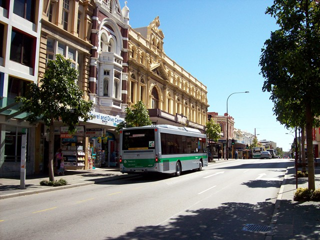
Metro Perth is impossible to navigate. The city clusters around the massive Swan River, with causeways to different lobes. Then there's the signeage...on day 2 I'd completely redone my plans, dropped the trip to Wave Rock, decided to take tours, and returned the car to the airport. There were big airport signs until the last turn, which had a small placard in 1950s script, about 4" high and 2' long. Spent 45 minutes getting an educational tour of Midlands and other airport-surrounding townlets. But downtown Perth (the lobe called East Perth) is great for walking. Everything that's fun is within a 20 minute walk.
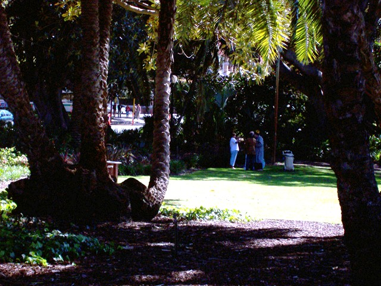
Aboriginees getting stoned on the Western Australia Supreme Court lawn.
Perth is laid back. Nobody really works on Fridays. By Friday noon, the streets and pubs were full. And Sunday afternoons are the "Sunday Session", when it's mandatory to hang out in a pub and catch up with all your mates.
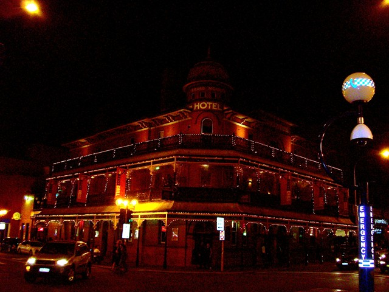
James St. is the student party zone, about 1km of good restaraunts and pubs and clubs, of which this is the biggest. Saturday nights you can navigate among weaving among weaving students bellowing "Yo, where the fuck are...are you mate?" into mobiles. This is the first place in Oz I've seen any hip-hop influence. All the aboriginees, and a few bleached brothas looked just like Tupac with cornrows and white bandanas. A few even had the accent and the bit about pointing your chin up when talking loud. The only thing that was missing was anger.
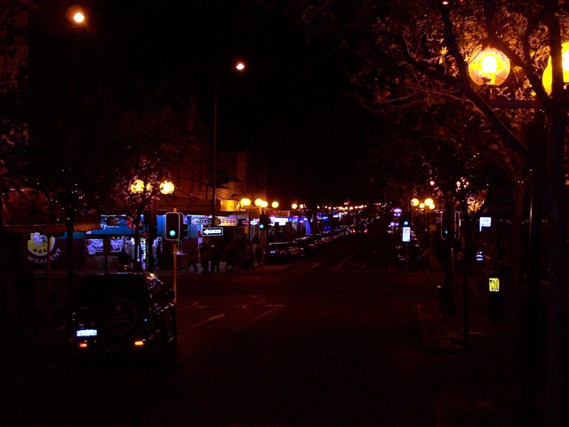
Another shot of James St. Went to some very good Indian places here. I spent an awful lot of time sleeping. Slept all night, then an hour or two in the morning, then an hour in the afternoon. I did that again today. Wonder if I'll end up like my maternal grandfather, who spent all day snoring on the sofa and all night snoring in bed. If I do, I'll have a cat who thinks I'm the greatest thing since shredded tweet. I do worry, though.
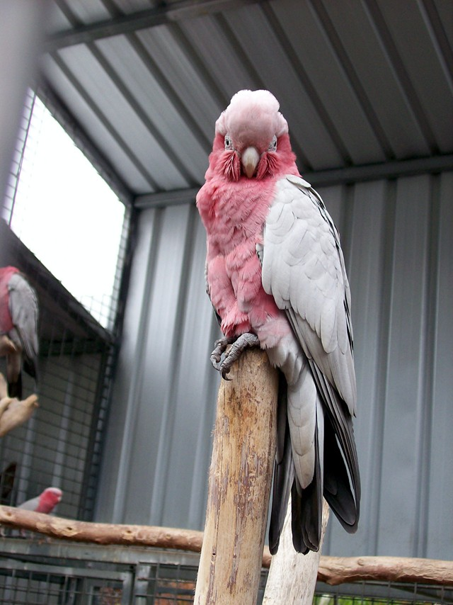
The galah is a common herd-of-birds-in-the-verge bird in Canberra. They're often kept as pets because, although they're parrots, they're quiet, Brett.
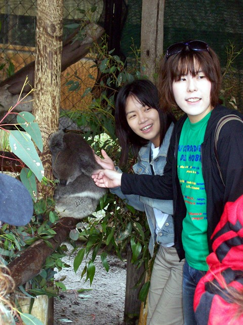
Koala petting. These guys eat nothing but eucalpyt leaves--they don't even drink water--and it's so low calorie that they sleep 80% of the time. (Maybe I've been overdieting. I have lost 2.5kg though.) After petting this one, my hand actually smelled like eucalpytus oil.
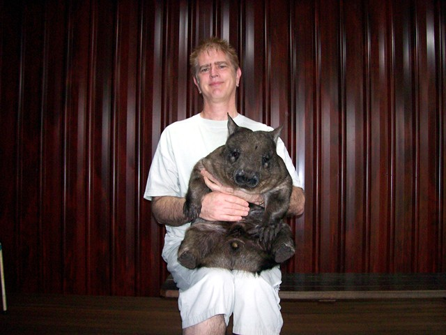
People sometimes ask if Sherry and I had any kids.
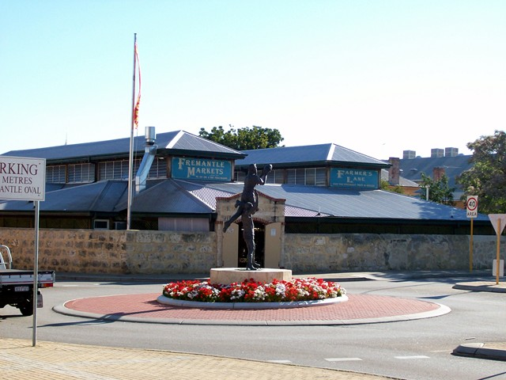
Freemantle is the port on the Indian ocean at the mouth of the Swan through which Australia's main economic base--minerals--passes. The market walls were built with convict labor. The markets were funky, everything from cherimoyas to astrologers.
Check this out, Luis. Can your tree do this? (Compare size to apples.)
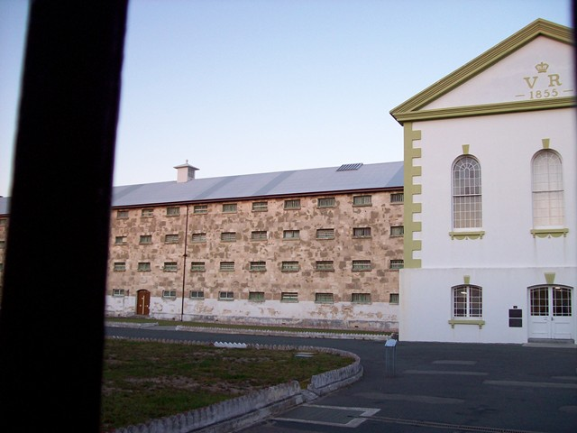
Freemantle prison looks a lot nastier on the inside than the outside. The town was originally a convict colony. I especially enjoyed the flogging post and the gallows.
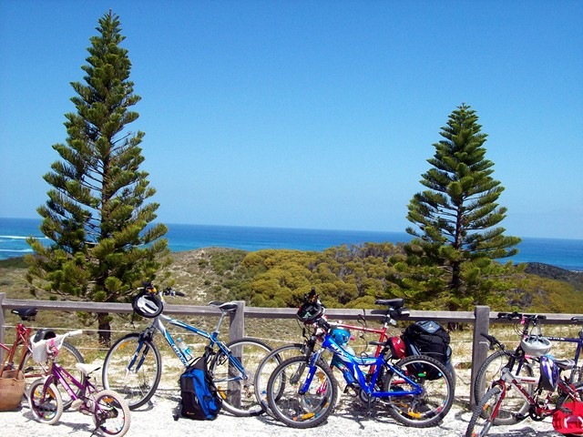
Rottnest Island is a half hour speedboat trip from Freemantle. Cars are banned. The island is about 10 km long. I turned into the Energizer Bunny--hired a mountain bike and pedalled all day. Perth was my first view of the Indian Ocean. I was well and truly on the Far Side of the World.
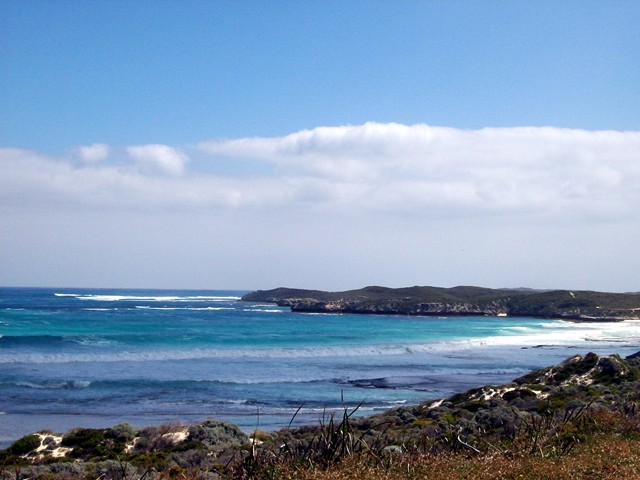
Despite the bays and lighthouse, I was in a nice mood on Rottnest. Nice in the 1700s sense when a contemporary called Newton a "nice man", meaning a tetchy bastard. Newton was paranoid about his rival Robert Hooke. His comment "If I have seen further than others, it is because I have stood on the shoulders of giants" was written in a letter to Hooke, who was a dwarf. Having figured out the law of gravitation, Newton tossed it in a drawer, afraid to publish lest Hooke somehow end up with the credit. A contemporary called upon him to discuss gravitation. Newton rummaged around and found his proofs. "Whilst others sought the law of gravitation, Newton had lost it", the visitor wrote. If I told you all the things that ran through my mind that day, you'd be afraid to come near me.
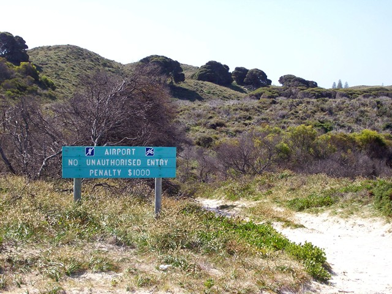
Just like Dulles.
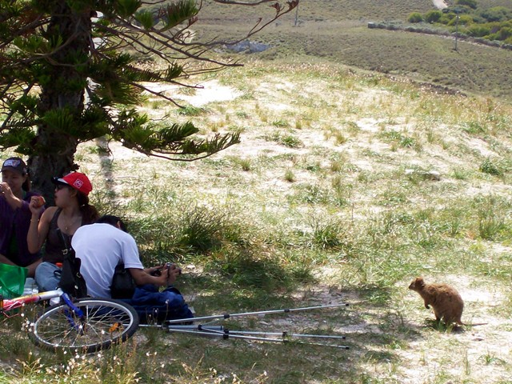
Somebody's been feeding the quokkas. The island's name is Dutch for "rat's nest". The explorer who discovered it first through they were cats, then rats. They're actually members of the wallaby family. I found the trick of mountain biking is shift-on-demand to keep the level of exertion constant. If you don't do that, you're squandering precious momentum, or failing to gain it while you have the chance. With my new improved conditioning, I did pretty good on the hills. I was walking up the steepest hill on the island when a lady with a trailer with a baby in it, saying "Oh my God", passed me.
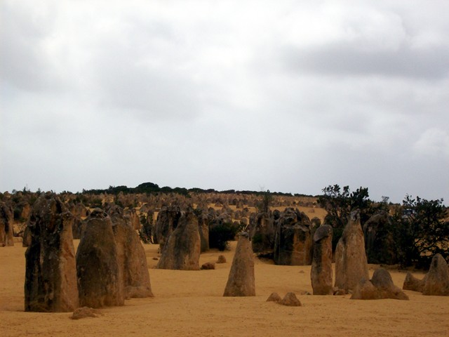
The Pinnacles are about 3 hours north of Perth. This is completely unique. Even better than Middle Earth in New Zealand.
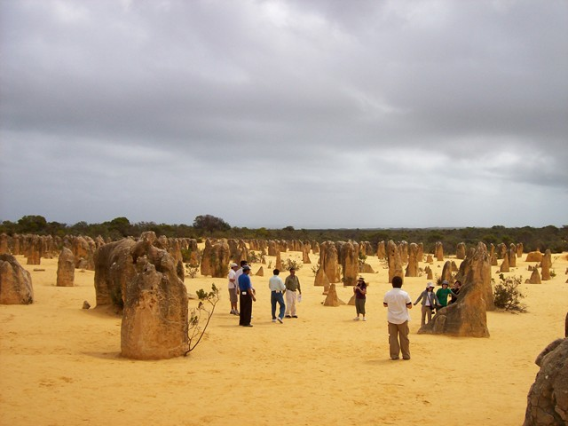
Here's what happened. 35,000 years ago (decling Treta yuga before last), Western Australia was wet. The ocean deposited a layer of seashells, which turned into limestone. The ocean receeded. The limestone was covered with sand, and eucalpytus trees grew. The trees are quite acidic. Acid leeched from their root systems, creating a cone-shaped shell of calcium below. The climate dried out. The trees burned off. The sand blew away. The soft limestone quickly eroded, except where protected by a calcium shell.
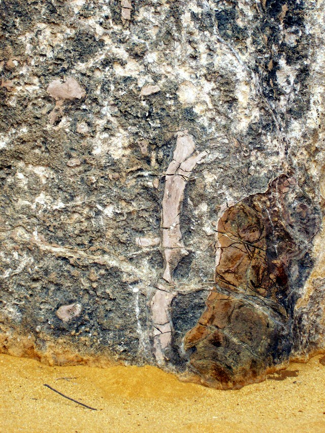
Tree roots visible in the shell.
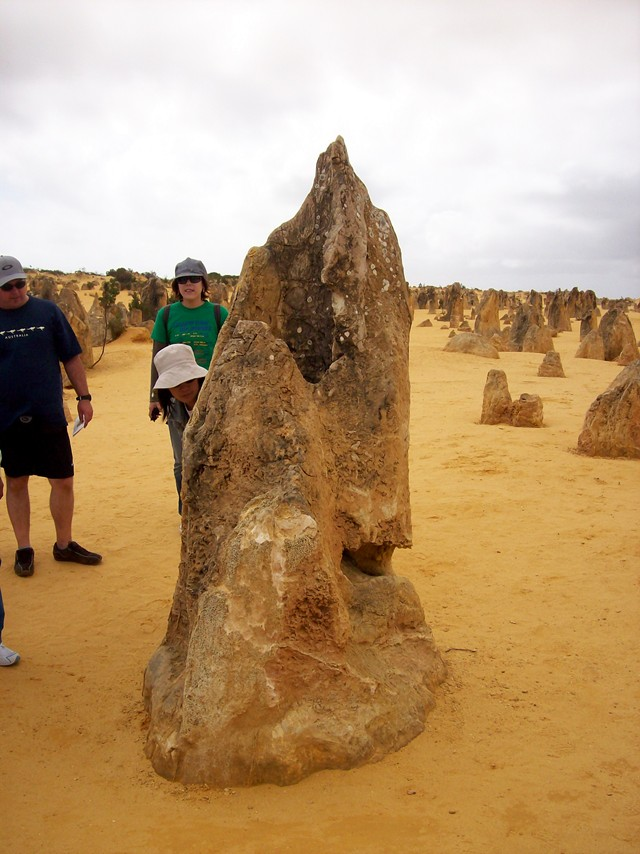
Taproot visible in the shell.
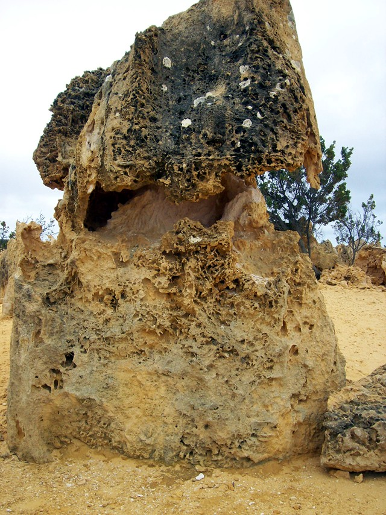
Once the shell is breeched, the powery limestone inside quickly erodes. So if you want to see the Pentacles, this is the millenium to do it.
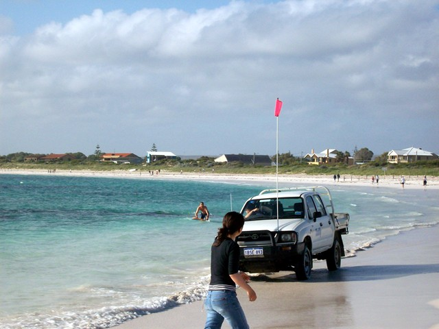
Bay at the small fishing village of Lancelin. There are white sand dunes across the highway.
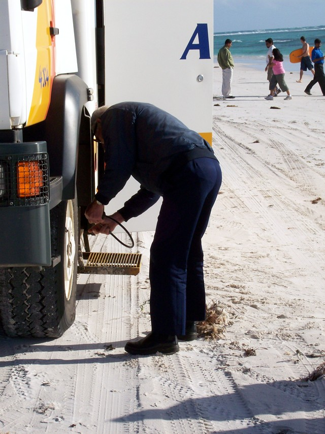
Peter deflates the tyres to half pressure so the bus can go on the dunes.
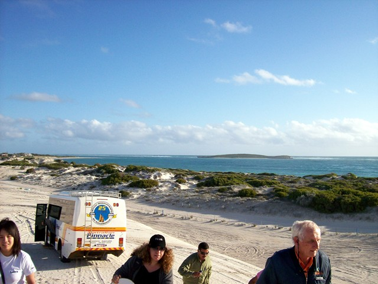
Tour guide Peter (right) was reserved but exuded a quiet warmth. He said this was about his 1,000th trip to the Pinnacles, as far as he could reckon. Indian, Israeli and Japanese tourists R-L.
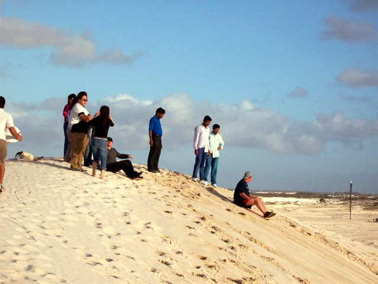
Sandboarding the dunes was a blast. You're going really really fast by the time you hit the bottom, and if you try to moderate the speed at all, you dump. I went down about twice as often as anybody else.
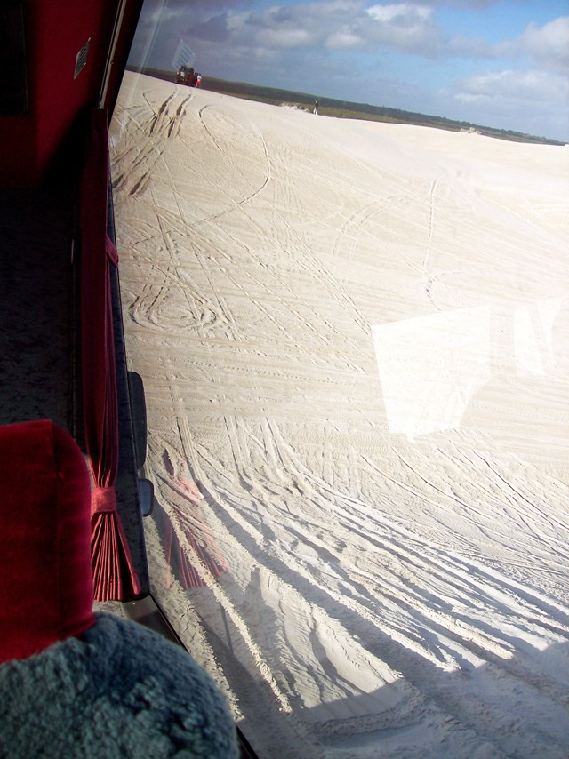
Tour bus on the dunes. Peter went charging up and down literally 45-degree slopes. I couldn't believe any insurance company in the world would let him do this! You can't really see what's going on in the picture. See where the red abruptly stops in the sand? That's the edge of a cliff we're about to go down.
This being me, I left my sunnies in the tour bus office (disappeared), my biker roo in an Indian restaraunt (recovered). This being Western Australia, the hotel put me in a smoking room, missed one of the wakeup calls, and although I had the same cold buffet every morning, charged me a different amount varying from $13 (correct) to $18.